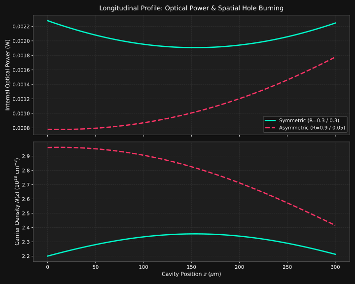
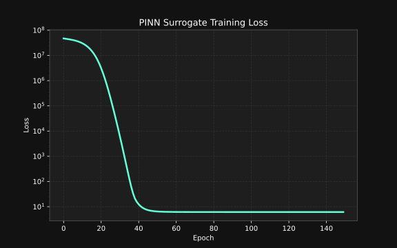

PLaser
PINN boosted real-time design costs only milliseconds, solving quasi-3D electro-optico-thermo model.
Device Architecture
Interactive Navigation: Mapping the physical telecom laser assembly to geometrical solvers.
14-Pin Butterfly Package & Diode Chip
In optical fiber communications, edge-emitting semiconductor lasers are integrated into standard 14-Pin Butterfly Packages. This assembly includes the laser diode chip, a Thermoelectric Cooler (TEC), a thermistor, an optical isolator, and a fiber-coupling lens.
The laser chip itself is a micron-scale semiconductor stack grown on an Indium Phosphide (InP) substrate. Electrical current is injected through top stripe contacts, generating optical gain inside an active **Multi-Quantum Well (MQW)** waveguide layer. High optical field density is confined vertically and horizontally in a ridge structure, emitting a coherent beam through cleaved facets.
Submount Mounting & Heat Dissipation
To operate high-power telecom lasers reliably without thermal degradation, the laser diode chip is mounted **p-side down** on a highly thermally conductive **Copper (Cu) or Silicon Carbide (SiC) submount** heat sink.
Since the active region is only a few microns from the p-contact top surface, p-down mounting provides the shortest thermal path to the heat sink, keeping the active core junction temperature low. Self-heating generated by Joule resistance and non-radiative Auger recombination is swept away to the thermoelectric cooler under the submount, preventing thermal roll-off.
2D Elmer FEM Cross-Section Solver
The 2D transverse plane cross-section ($x-y$ plane perpendicular to light propagation) governs the waveguide modal confinement and localized physics. **Elmer FEM** solves the coupled differential equations across the ridge cross-section:
- Electrostatics (Poisson): Solves local electrostatic potential $\psi(x, y)$ under biasing contacts.
- Carrier Transport (Drift-Diffusion): Governs lateral current distribution and electron/hole profiles.
- Wave Optics (Vector Helmholtz): Solves for the optical waveguide mode shapes $\Psi(x, y)$ and confinement factor $\Gamma$.
- Thermal diffusion: Tracks localized lattice temperature distribution $T(x, y)$ and hotspots.
 Ridge waveguide cross-section mesh grid geometry in Elmer.
Ridge waveguide cross-section mesh grid geometry in Elmer.
1D Longitudinal Cavity & Spatial Hole Burning
Along the longitudinal axis ($z$-axis, cavity length $L$), forward-propagating wave $P^+(z)$ and backward-propagating wave $P^-(z)$ bounce between the mirror facets. In asymmetric cavity structures ($R_1 \approx 90\%$ HR rear facet, $R_2 \approx 5\%$ AR output facet), the internal optical power increases exponentially towards the output facet.
This localized power spike drains the carrier density $N(z)$ near the front mirror due to rapid stimulated recombination. This depletion profile, known as **Spatial Hole Burning (SHB)**, impairs single-mode wavelength stability. PLaser's PINN surrogate evaluates these longitudinal coupling profiles instantly.

Figure 2.1: Coupled 1D longitudinal optical power surge and carrier depletion profile.Video Demonstration
Real-time parameter sweeps and multi-physics profiling on the PLaser dashboard.
Methodology & Physics
Deep Multitask Neural Net training under Physics-Informed losses.
Instead of relying purely on data interpolation, PLaser integrates physical laws directly into the neural network backpropagation pathway. The training loss function enforces local carrier continuity along the cavity grid:
This constraint prevents non-physical predictions, securing stability and generalization bounds even when parameters are swept near the highly nonlinear threshold limits ($I \approx I_{\text{th}}$) or under severe thermal roll-off ($T_0 > 320\text{ K}$).
The network structure incorporates GELU activations and maps a 5D design vector $[R_1, R_2, L, T_0, I_{\text{act}}]$ to a 105D output representing scalar performance metrics and longitudinal arrays.
Performance & Speedup
1,000,000x acceleration enabling interactive sweeps.
Traditional multi-physics loops are bottlenecked by the iterative coupled solver. Generating a single sweep configuration requires converging electrostatic, carrier, thermal, and optical waves sequentially. PLaser solves this latency bottleneck instantly:
| Solver Mode | Latency | R² Accuracy |
|---|---|---|
| Elmer 2D FEM Solver | 12 - 25 seconds | 1.000 (Reference) |
| 2.5D Cavity Shooting solver | 1.2 - 2.8 seconds | 1.000 (Reference) |
| PLaser PINN Surrogate | < 5 milliseconds | > 0.997 |
This rapid execution speed enables real-time tuning and global parameter sweeps in a fraction of a second, accelerating laser cavity coating design.
Verification & Validation Accuracy
The PINN surrogate model has been verified against held-out validation datasets. Predicted vs. true scatter plots indicate excellent alignment across the entire parametric domain, proving that the model successfully generalizes to unseen cavity lengths, mirror coatings, and ambient conditions:
- Optical Power $R^2$: 0.998
- Wall-Plug Efficiency $R^2$: 0.997
- Terminal Current $R^2$: 0.999
- Mean Power Residual: < 0.45 mW

Figure 3.1: 6-order-of-magnitude convergence over data and physics loss.Installation & Onboarding Guide
Set up PLaser locally in under 2 minutes.
1. Clone & Configure Environment
Set up a virtual environment in a short folder path to avoid Windows MAX_PATH length limitations (WinError 206):
git clone https://github.com/ZhenwenWan/PLaser.git cd PLaser python -m venv .venv .\.venv\Scripts\Activate.ps1 # On Windows pip install -r requirements.txt
2. Launch Pretrained App Dashboard
Run the Streamlit application using pre-bundled weights:
python -m streamlit run app.py
Tweak sliders and watch multi-physics curves adapt instantly on the localhost dashboard.